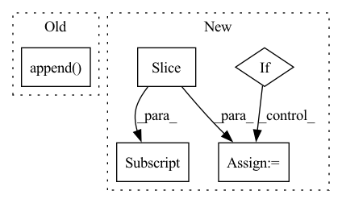

Pattern ID :28084

Before Change
df_val.append(df.reset_index(drop=True))
else:
df_train.append(df[df["ds"] < threshold_time_stamp].reset_index(drop=True))
df_val.append(df[df["ds"] >= threshold_time_stamp].reset_index(drop=True))
return df_train, df_val
def split_df(df, n_lags, n_forecasts, valid_p=0.2, inputs_overbleed=True, local_modeling=False):
After Change
for key in df_dict:
if df_dict[key]["ds"].max() < threshold_time_stamp:
df_train[key] = df_dict[key].copy(deep=True).reset_index(drop=True)
elif df_dict[key]["ds"].min() > threshold_time_stamp:
df_val[key] = df_dict[key].copy(deep=True).reset_index(drop=True)
else:
df = df_dict[key].copy(deep=True)
n_train = len(df[df["ds"] < threshold_time_stamp])
split_idx_train = n_train + n_lags + n_forecasts - 1
split_idx_val = split_idx_train - n_lags if inputs_overbleed else split_idx_train
df_train[key] = df.copy(deep=True).iloc[:split_idx_train].reset_index(drop=True)
df_val[key] = df.copy(deep=True).iloc[split_idx_val:].reset_index(drop=True)
return df_train, df_val
In pattern: SUPERPATTERN
Frequency: 3
Non-data size: 5
Instances
Fragment ID: 83023763
Project Name: ourownstory/neural_prophet
Commit Name: 6619741f934957dff2a7fa4ff66620772d41471f
Time: 2022-02-14
Author: ourownstory@users.noreply.github.com
File Name: neuralprophet/df_utils.py
M Class Name: AnonimousClass
N Class Name: AnonimousClass
M Method Name: split_considering_timestamp(5)
N Method Name: split_considering_timestamp(2)
M Parent Class:
N Parent Class:
M File Name: neuralprophet/df_utils.py
N File Name: neuralprophet/df_utils.py
M Start Line: 500
M End Line: 510
N Start Line: 526
N End Line: 552
'>
Before Change
level = pyramid_levels_min
total_anchors /= num_anchors
while total_anchors > 0:
pyramid_levels.append(level)
stride_hh, stride_ww = feature_sizes[0][0] / feature_sizes[level][0], feature_sizes[0][1] / feature_sizes[level][1]
cur_num_anchors = tf.math.ceil(input_shape[0] / stride_hh) * tf.math.ceil(input_shape[1] / stride_ww)
total_anchors -= int(cur_num_anchors)
level += 1
After Change
def get_pyramid_levels_by_anchors(input_shape, total_anchors, num_anchors="auto", pyramid_levels_min=3):
feature_sizes = get_feature_sizes(input_shape, [pyramid_levels_min, pyramid_levels_min + 10])[pyramid_levels_min:]
feature_sizes = tf.convert_to_tensor(feature_sizes, dtype="int32")
num_anchors_at_each_level_cumsum = tf.cumsum(tf.reduce_prod(feature_sizes, axis=-1))
if num_anchors == "auto":
// Pick from [1, 3, 9], 1 for yolox, 3 for yolor, 9 for efficientdet
picks = tf.convert_to_tensor([1, 3, 9], dtype=tf.int32)
max_anchors = num_anchors_at_each_level_cumsum[-1] * picks
num_anchors = picks[tf.argmax(total_anchors < max_anchors)]
total_anchors = total_anchors // num_anchors
'>
Fragment ID: 83023761
Project Name: leondgarse/keras_cv_attention_models
Commit Name: df3cf1ce0ac4b02a9c73496b1a583b9a892c7b0a
Time: 2022-03-25
Author: leondgarse@gmail.com
File Name: keras_cv_attention_models/coco/anchors_func.py
M Class Name: AnonimousClass
N Class Name: AnonimousClass
M Method Name: get_pyramid_levels_by_anchors(4)
N Method Name: get_pyramid_levels_by_anchors(4)
M Parent Class:
N Parent Class:
M File Name: keras_cv_attention_models/coco/anchors_func.py
N File Name: keras_cv_attention_models/coco/anchors_func.py
M Start Line: 101
M End Line: 112
N Start Line: 103
N End Line: 114
'>
Before Change
num_errors += 1
continue
all_ids.append(sentence_id)
all_embeddings.append(embedding)
if index % 1000 == 0:
print(f"Embedded {index} with {num_errors} errors")
After Change
start_ix = batch_ix * batch_size
end_ix = min((batch_ix + 1) * batch_size, n_sentences)
if start_ix == end_ix:
continue
sentences_text = sentences.iloc[start_ix: end_ix]["text"].to_list()
sentences_id = sentences.iloc[start_ix: end_ix]["sentence_id"].to_list()
try:
preprocessed_sentences = model.preprocess_many(sentences_text)
'>
Fragment ID: 83023758
Project Name: bluebrain/search
Commit Name: 6eb30c8b3e77791ee4e407dd19d7a5e08fe5e132
Time: 2020-09-04
Author: jankrepl@yahoo.com
File Name: src/bbsearch/embedding_models.py
M Class Name: AnonimousClass
N Class Name: AnonimousClass
M Method Name: compute_database_embeddings(4)
N Method Name: compute_database_embeddings(3)
M Parent Class:
N Parent Class:
M File Name: src/bbsearch/embedding_models.py
N File Name: src/bbsearch/embedding_models.py
M Start Line: 287
M End Line: 309
N Start Line: 433
N End Line: 494